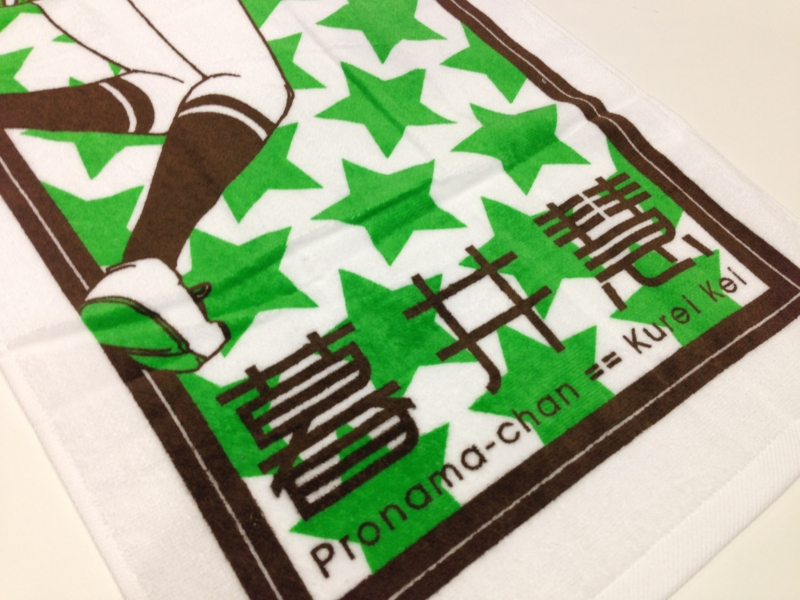

プロ生ちゃんタオルを独占先行入手！
公開日：

これから暑い暑い季節がきますね。デブで汗っかきな皆さんにおかれましては、タオルが手放せない時期でありましょう。おれもそうです。そんなお前らにピッタリなプロ生ちゃんグッズが！ これだ！！


三色刷りだが、なかなかの出来。児童ポルノの規制に引っかからないレベルで健康的なエロを実現、その肌触りたるや……もうたまらんで！
たぶん勉強会に参加したらゲットできると思う（残念ながら、おそらく有償）ので、みなさん、奮って参加しましょう！ だるやなぎ枠で LT をしてくれたひとにプレゼントするのもありかもしれない。
直近の勉強会は 6/22 プログラミング生放送勉強会 第23回＠大阪 開催！ | プログラミング生放送 らしい。残念ながら僕は不参加ですけど、楽しんできてね！*1
*1:タオルの頒布があるかは未確認